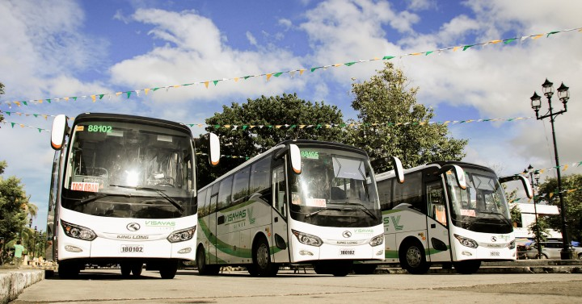
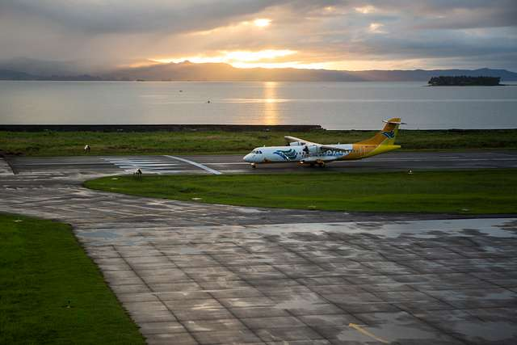

Travel Guide
Your Ultimate Guide to Exploring Eastern Samar's Hidden Gems.
How to Get There?
Whether you're traveling from within the Philippines or abroad, reaching Eastern Samar
is convenient through a combination of air and land transportation.
The province's capital, Borongan City,serves as the main gateway for visitors.

By Land
Several bus companies operate daily trips from Tacloban City to Borongan City.
Travelers can also drive along the Pan-Philippine Highway, (Maharlika Highway)
which passes through the picturesque San Juanico Bridge, connecting Leyte and
Samar.

By Air
The fastest way to reach Eastern Samar is by flying to Daniel Z. Romualdez
Airport in Tacloban City. From the airport, visitors can take a bus, van, or
private vehicle to Borongan City. The journey takes approximately 3 to 4 hours
and offers scenic views along the way.
Getting Around Eastern Samar
Once in Eastern Samar, visitors can easily travel between destinations using:
- 🚖 Tricycles (for short-distance travel)
- 🚌 Jeepneys and buses (for traveling between towns)
- 🏍️ Motorcycle taxis or habal-habal (available in some areas)
- 🚗 Private vehicles or rentals (ideal for flexible travel)
- 🚐 Vans (for faster transportation)

Travel Reminder
Before your trip, check the latest weather forecast and transportation schedules, especially
during the rainy season. Booking accommodations and transportation in advance is also
recommended during holidays and peak travel months.
🌤️ Best Time to Visit
The best time to visit Eastern Samar is during the dry season,
from November to May. During these months,
the weather is generally sunny and ideal for exploring beaches, islands, waterfalls, and historical sites.
When is the best time to Visit Philippines?
| Tourist Spot | Best Time to Visit | Reason |
|---|---|---|
| Hebacong Sea of Clouds | November to February | Cooler mornings increase the chance of seeing the beautiful sea of clouds at sunrise. |
| Calicoan Island | March to May | Warm temperatures and clear skies are ideal for surfing, island hopping, and sightseeing. |
| Sulangan Church | Year-round | The church can be visited any time, but mornings and late afternoons are cooler and more comfortable. |
| Hilangagan Sandy Beach | November to May | Calm seas and sunny weather are perfect for swimming, relaxing, and beach activities. |
| Sohoton Caves and Natural Bridge Park | November to May | Safer and more enjoyable for cave exploration and boat rides due to lower rainfall. |
| Tinago Falls | November to May | Pleasant weather makes hiking easier while the waterfall remains refreshing and beautiful. |
Travel Essentials & Tips
Pack wisely to ensure a safe, comfortable, and enjoyable trip around Eastern Samar.
🧳 What to Pack?
👕 Clothing
- Lightweight and comfortable clothes
- Extra change of clothes
- Comfortable walking shoes or sandals
- Hat or cap
- Swimwear (for beaches and waterfalls) Order NEW clothes!
📱 Gadgets & Essentials
- Mobile phone
- Power bank
- Phone charger
- Camera (optional)
- Waterproof bag or phone pouch Shop now at Electro World!
💵 Important Items
- Valid ID
- Cash (some areas may have limited ATM access)
- Wallet or small travel bag
- Printed or digital copies of bookings (if applicable) What documeants do I need?
💧 Health & Personal Care
- Reusable water bottle
- Personal medications
- Basic first aid kit
- Hand sanitizer
- Wet wipes or tissues Shop for your daily essentials at Etsy!
☀️ Sun & Weather Protection
- Sunscreen
- Sunglasses
- Umbrella or raincoat
- Insect repellent Sun safety tips!
Travel Reminder
Pack light but bring everything you need for outdoor activities. Wear comfortable clothing, stay hydrated, and
always be prepared for changing weather conditions while exploring Eastern Samar
🗓️ One-Day Itinerary
Follow this suggested itinerary to experience some of Eastern Samar's most beautiful attractions in just one day.
Create your own Travel Itenerary now!| Time | Destination | Activity |
|---|---|---|
| 7:00 AM | Borongan City | Enjoy breakfast and prepare for your trip. |
| 8:30 AM | Hebacong Sea of Clouds | Watch the sunrise and admire the scenery. |
| 10:30 AM | Sulangan Church | Visit the historic church. |
| 12:00 PM | Local Restaurant | Enjoy lunch and local delicacies. |
| 1:30 PM | Calicoan Island | Relax, swim, and take photos. |
| 4:00 PM | Hilangagan Sandy Beach | Enjoy the beach and unwind. |
| 6:00 PM | Borongan City | Return to the city and have dinner. |